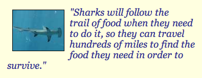

Sharks don’t roam all areas of the ocean as some people fear. While it is true that occasionally they are spotted in locations that they normally wouldn’t be it has to do with their needs. For example if something is wrong in their normal habitat such as severe pollution, an oil spill, or even a lack of food then they will search out other locations where they can reside. They aren’t territorial like so many types of animals are. So they are free to roam the waters. The females don’t stay to care for their young so for those species who lay eggs, they have not trouble placing them in a hidden location and then being on their way. They young sharks care for themselves from the very moment they hatch.
Sharks are very good at adapting to new situations and environments which is why they have survived in the water for millions of years. The habitat of a shark depends on the species though. Sharks are cold blooded, and that would usually imply that they would search for areas where the temperatures are very cold. However that is not true as there are sharks living in warm, temperate and cold waters. It is understood that sharks are going to live where the water is deep enough that they can be well hidden. This allows them the ability to swim freely around in the body of water. Of course they need to reside where they can find enough food to survive on. Since sharks have very few enemies they are able to move freely around in the water as they desire. They are loners for the most part so they don’t travel together.
However, many sharks live closer to the surface in order to find the sources of food they are after. They often don’t eat daily though so they can dwell deeper in the water in between feedings. They will follow the trail of food when they need to so they can travel hundreds of miles to find what they need in order to survive. Generally the more food they can live on in a general area though they more they will remain in one spot.  Most species of sharks reside in saltwater which means they are found in the oceans. However, some of them are known to live in bodies of fresh water. There are many who worry that humans are destroying the natural habitats of sharks. We continue to pollute the waters and to remove various sources of food from the water for our own use. As a result sharks have to move to locations that were once free of them if they wish to continue surviving. Some sharks now reside in fake habitats along with other types of aquatic live. This is to preserve them. Most are in exhibits at very expensive locations found around the world. Millions of people pay to go see them up close though as they walk through tunnels with the sharks on both sides swimming around. Others are carefully observed by researchers in order to learn more about certain species of sharks. Not all species do well in captivity though so the process is very selective. Even with specific locations where sharks are known to live, it is important to always keep an eye out for them when you are in open bodies of water. Sometimes they travel to other destinations. While you don’t want to be afraid of the water due to the risk of a shark being present, you do want to take some precautions.